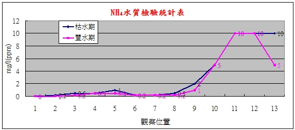

|
>>氨氮含量 |
|
氨氮(NH4) 對水生物起危害作用是游離氨氨氮(NH4-N)
離子，其毒性比銨鹽對於環境的影響更為嚴重，會應區域性的增強而增大。氨氮毒性與池水的 pH
值及水溫有密切關系，一般情況，pH 值及水溫愈高，毒性愈強，對魚的危害類似于亞硝酸鹽。
氨氮對水生物的危害有急性和慢性。慢性氨氮中毒危害為：生物攝食降低，生長速度減慢，組織損傷，降低氧在組織間的輸送。魚類對水中氨氮比較敏感，當氨氮含量高時會導致魚類死亡。急性氨氮中毒影響：水生物表現為興奮、在水中失去平衡、嚴重者甚至死亡。
|
| |
|
依據台灣目前所用對於河川水質監測最廣泛的指標是所謂的河川污染指標，這是由四項測試值所組成的: 溶氧量(DO);
生化需氧量(BOD5); 氨氮含量(NH3-N)與懸浮固體。 |
|
污染等級/項目 |
A(未稍受污染) |
B(輕度污染) |
C(中度污染) |
D(嚴重污染 |
|
溶氧量(DO) mg/l |
6.5以上 |
4.6~6.5 |
2.0~4.5 |
2.0以下 |
|
生化需氧量(BOD)
mg/l |
3.0以下 |
3.0~4.9 |
5.0~15 |
15以上 |
|
懸浮固體(SS)
mg/l |
20以下 |
20~49 |
50~100 |
100以上 |
|
氨氮(NH3-N) mg/l |
0.5以下 |
0.5~0.99 |
1.0~3.0 |
3.0以上 |
|
| |
|
樹梅坑溪氨氮NH4檢測結果 |
|
觀察點 |
1 |
2 |
3 |
4 |
5 |
6 |
7 |
8 |
9 |
10 |
11 |
12 |
13 |
|
枯水期 |
0 |
0.2 |
0.5 |
0.5 |
1 |
0.2 |
0.2 |
0.5 |
2 |
5 |
10 |
10 |
10 |
|
豐水期 |
0 |
0 |
0.2 |
0.5 |
0.5 |
0.2 |
0.2 |
0.2 |
1 |
5 |
10 |
10 |
5 |
|
|
樹梅坑溪氨氮 NH4檢測統計表 |
|
 |
|
結果分析：豐水期與枯水期源流區（未受污染）、上游區水質（中度污染），
但在中游區（輕度污染），下游區（嚴重污染），豐水期與枯水期在NH4的污染程度相似。NH4的主要污染源是豬隻的排泄物與人類的家庭污水，及使在豐水期污染的情況在下游區還是很嚴重。 |
| |
|
參考資料：氨氮、硝酸鹽氮、亞硝酸鹽氮的危害。中國儀器網。 |